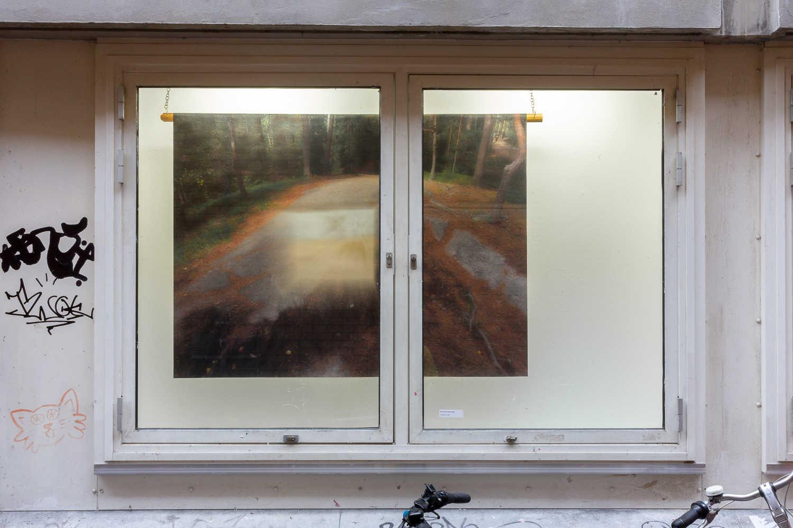
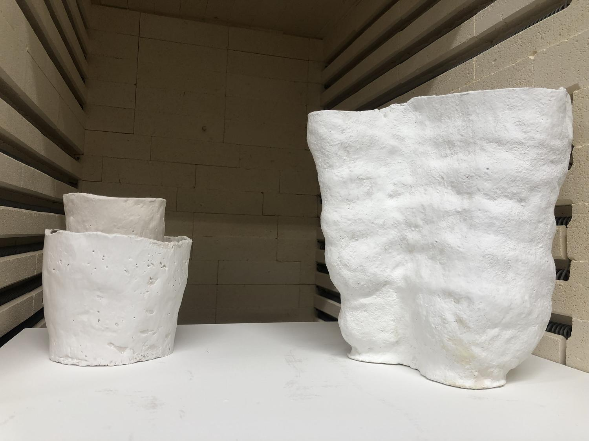

January - June 2022
Metal welded frame 1 m x 1,50 m, metal welded well structure, rings made out of metal, piezo, tufted textile piece, photograph printed on canvas
As a conscious being, understanding that things that ‘live’ together do not necessarily belong together in a fixed matter. As time is no obstacle but rather an object in which possibilities are accomplished, a question still arises; are transformations happening on the surface of moving things in the development of ‘becoming’, or in the internal ground of perception? I seek for understanding the spores of sound and the physical aspect of it, the possibilities and restrictions of being in contact with them.
Giving sound to silence. My objects are collectors of the sound they can produce, by standing still, by movement or by touch, revealing its hidden characteristics. The concept of my objects across mediums simultaneously confuse and clarify, challenging our assurances, reminding vaguely of what we cannot position or recollect. An object can give you a lot more information that might not be visible at first sight. The same goes for silence, which gives room for interpretation. Both of these subjects make space for audiences to fill with their own ideas, interpretations, hesitations. This is important in the way we perceive things.
While the visual aspect of a thought is often times hardly palpable, invisible notions of sound can slip through the ears when thinking of its features.The natural state of sound emphasizes or reinstates rather than alienates the connections between sound and silence. In this particular thought the auditory imagination as creative impulse includes this possibility, as the important notion remains that the separation is conceptually and actually possible. Conceiving new associations with connections that are important and relevant.
↓ Click to open video

↓ Click to open video
Size: 150 cm x 200 cm

Exhibited at Eight Cubic Meters, Amsterdam, Netherlands
Other projects:
Size: 100 cm x 150 cm
Ceramic pieces

Hand weaving

Crochet, knotted net
Wood drawing